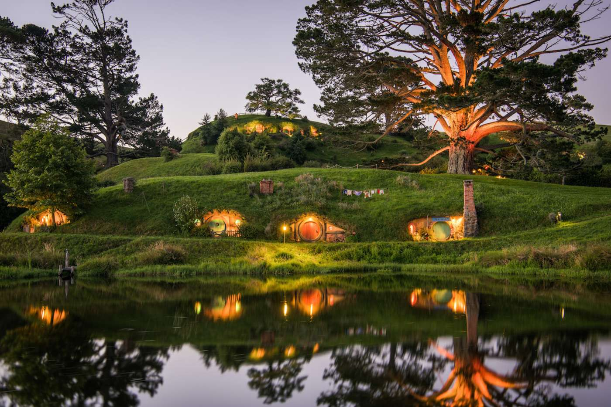

New Zealand. I would love to visit the set for Lord of the Rings and The Hobbit. It looks so beautiful there and I've never been to Europe before.
I admire my Michelle Obama. She is an incredible woman who sets an example of grace, poise and humility.
Here's a little more information about her.